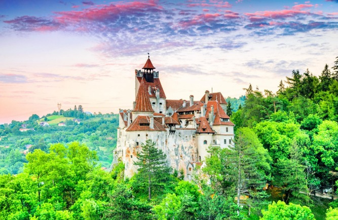
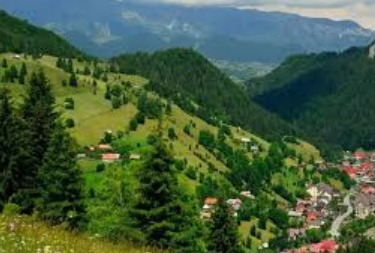
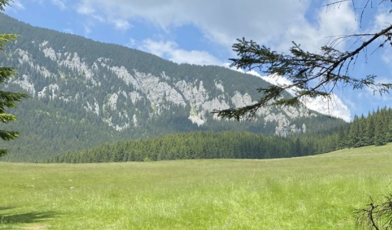
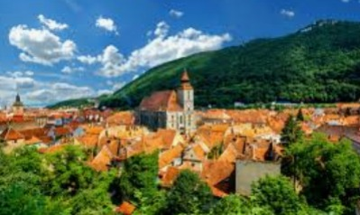
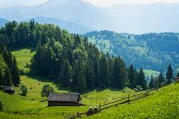
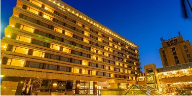
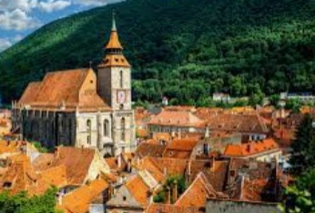

Why to choose Brasov ?
Brasov is the main city of Transylvania, Romania. Being one of the most beautiful cities in Romania, Brasov and places around it receives the visits of tens of thousand of visitors each year. Sunny in the summer or covered in glittering snow during the winter, Brasov remains as majestic as ever.
Local Attractions
BRAN CASTLE
Castle Bran- the home of the very known vampire, Dracula. Book a visit to see the place where the century-old vampire lives. Dark rooms, secret entries, narrow stairs, are all part of the Dracula home. Find the courage to come and visit his place!
MOECIU DE SUS
Right next to Bran Castle, you almost do not feel when leaving Bran and enter Moeciu. Totally opposite to Bran, Moeciu is a dream village, with large valleys and wonderful hills, the astonishing mountains behind them. You may forget being in a real world, this place is really a fairly tale land.
ZARNESTI
Do not hurry to leave before visiting Zarnesti. Famous for its canion, Zarnesti is probably one of the wildest place, a break from the daily routine, a breathe of fresh air. 'Prapastiile Zarnastilor' rezerves for you breath-taking landscapes, a path between the mountains.
Restaurants
Many people have heard of the historical and legendary region of Transylvania but a lot less are familiar with one of the main cities of the region, Brașov. This is considered one of the most beautiful cities in Romania. It so happens that it’s also my hometown so I might be a little bit biased here, forgive me. Still, I want to give you just a few reasons to visit Brașov, my lovely hometown.
CASTELUL BRAN
The historical center is not very big so you can easily walk around and explore all of it on foot. It is actually pretty enjoyable to walk around and enjoy the cobblestone streets filled with bars and restaurants, with a pleasant temperature in summer and usually covered in snow in winter.
MOECIU DE SUS
The historical center is not very big so you can easily walk around and explore all of it on foot. It is actually pretty enjoyable to walk around and enjoy the cobblestone streets filled with bars and restaurants, with a pleasant temperature in summer and usually covered in snow in winter.
MOECIU DE JOS
The historical center is not very big so you can easily walk around and explore all of it on foot. It is actually pretty enjoyable to walk around and enjoy the cobblestone streets filled with bars and restaurants, with a pleasant temperature in summer and usually covered in snow in winter.
Hotels
ARO HOTEL
The historical center is not very big so you can easily walk around and explore all of it on foot. It is actually pretty enjoyable to walk around and enjoy the cobblestone streets filled with bars and restaurants, with a pleasant temperature in summer and usually covered in snow in winter.
CASTELUL BRAN
The historical center is not very big so you can easily walk around and explore all of it on foot. It is actually pretty enjoyable to walk around and enjoy the cobblestone streets filled with bars and restaurants, with a pleasant temperature in summer and usually covered in snow in winter.
MOECIU DE SUS
The historical center is not very big so you can easily walk around and explore all of it on foot. It is actually pretty enjoyable to walk around and enjoy the cobblestone streets filled with bars and restaurants, with a pleasant temperature in summer and usually covered in snow in winter.
MOECIU DE JOS
The historical center is not very big so you can easily walk around and explore all of it on foot. It is actually pretty enjoyable to walk around and enjoy the cobblestone streets filled with bars and restaurants, with a pleasant temperature in summer and usually covered in snow in winter.
FIND BRASOV ON THE MAP
Many people have heard of the historical and legendary region of Transylvania but a lot less are familiar with one of the main cities of the region, Brașov. This is considered one of the most beautiful cities in Romania. It so happens that it’s also my hometown so I might be a little bit biased here, forgive me. Still, I want to give you just a few reasons to visit Brașov, my lovely hometown.
MOECIU DE JOS
The historical center is not very big so you can easily walk around and explore all of it on foot. It is actually pretty enjoyable to walk around and enjoy the cobblestone streets filled with bars and restaurants, with a pleasant temperature in summer and usually covered in snow in winter.